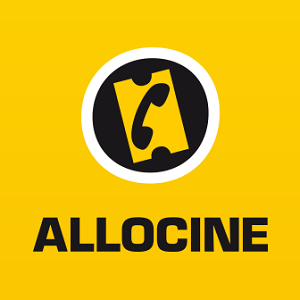

On your radar
Site integrations
Every site below gets Servarr search icons injected next to titles. Each integration can be toggled individually on the extension's Integrations tab. Want a site added? Integrations are community-built.
IMDb
The definitive movie and TV database. Detects whether the page is a series or a film and routes to the right app.
TMDb
The Movie Database — TV pages search Sonarr, movie pages search Radarr, with exact TMDb IDs where possible.
TVDb
TheTVDB series and movie pages, using the same metadata source many Servarr apps rely on.
Trakt
Shows and movies on Trakt. Trakt requires a subscription and the developer does not maintain an active account — this integration is entirely community supported.
TVmaze
Show pages, the countdown page and the shows directory all link straight into your Sonarr search.
MusicBrainz
The open music encyclopedia — artists and releases search Lidarr directly.
Letterboxd
From your watchlist to your library — film pages get a Radarr search icon next to the title.
TV Calendar
Episode air-date listings with one-click Sonarr searches for each show.
Rotten Tomatoes
Certified fresh? Send it straight from the review page to Sonarr or Radarr.
Metacritic
TV and movie pages on Metacritic, with single-page-app navigation handled automatically.
Simkl
TV, anime and movie tracking — searches the right app from show and film pages.
IPTorrents
IPTorrents requires an actively used account and the developer does not maintain one — this integration is entirely community supported.
last.fm
Artist and album pages feed your Lidarr library while you scrobble.

Allociné
France's biggest movie and TV site — series pages search Sonarr, films search Radarr.
SensCritique
French reviews and rankings for series and films, wired to the matching Servarr app.
BetaSeries
Created by a community member for the French version of the site; not maintained by the developer.
Prime Video
Broken as of September 2025 — the page source no longer exposes a reliable identifier or search term. Fix PRs welcome!
MyAnimeList
Anime series and films route to Sonarr or Radarr based on the page's media type.
Rate Your Music
Created by a community member; not maintained by the developer because the site blocks VPN traffic.
Wikipedia
Articles about shows, films and albums get a search icon for the matching Servarr app.
Missing your favourite site? Integrations are declarative and surprisingly small — see the developers page for how to add one, or request it as a feature.